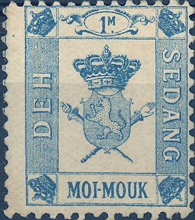
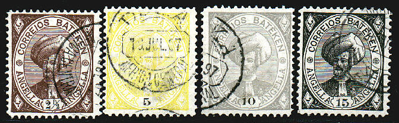
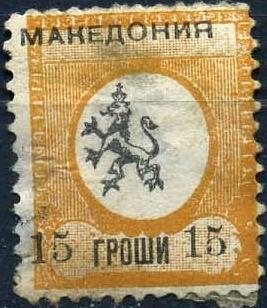

{kind=link}

Note: on my website many of the
pictures can not be seen! They are of course present in the
catalogue;
contact me if you want to purchase the catalogue.
An imaginary country, supposed to be a Portuguese colony.

I've seen the following values (value in black) 2 1/2 a brown 5 a yellow 10 a grey 15 a black 20 a blue 25 a red 50 a lilac 75 a orange 100 a red 200 a green
I have seen these stamps only cancelled with 'DOKA AFRICA CENTRAL', with different dates.
An imaginary country situated somewhere in Indochina, issued in 1889 by the frenchman David Mayena. The man claimed to be the king of Sedang (a country that never existed). After selling huge amounts of stamps he disappeared leaving behind lots of debts.....
I've seen the following values (other values exist): 1/2 m (1/2 MATH) brown 1 m (MOI MATH) violet 2 m (BER MATH) green 4 m (POUEN MATH) red 1 M (MOI MOUK) blue 1/2 $ yellow 1 $ (MOI $) red
Often these bogus stamps are obliterated with a circular 'DEH SEDANG PELEI - AGNA' cancel. Even forgeries seem to exist of these stamps (see 'Focus on Forgeries' by Tyler). If my information is correct, the stamp with hyphen (for example 'PLOUEN-MATH') were printed in Hong Kong and the ones without hyphen (for example 'PLOUEN MATH') were printed in Paris.
Recently I saw two websites selling stamps of Sedang on the internet http://www.interlog.com/~dmak/stamps.html and http://www.sedang.hm/. Apparently, these 'new' bogus issues originate from Canada (information obtained from Nat Ward). I added some pictures of these 'modern' bogus stamps:
other bogus issues:
A bogus issue for Buenos Aires, man on a horse, inscription
'CORREOS'?
A bogus issue for Morelos (Mexico):

I've seen another value of 2 c black on yellow, with the star behind the value in blue. As in the above stamp, the word 'MORELOS' seems to be printed seperately.
This stamp with inscription 'LOCAL VALUE' and '4 POTATOES' is a bogus issue.
I have seen a 'reprint' minisheet with four stamps and the following text: 'The above are facsimile copies of the now famour "Potato" Essay; the only one of a set designed by Mr. A.B.Crawford, which was actually printed. These 1d. Potato Stamps, which now realise sumsover 200 times their face of one penny or '4 potatoes'. were included in a longer set submitted to the Secretary of State for the Colonies, with a petition for Postage Stamps for TRISTAN DA CUNHA in May, 1946. Mr.A.B.Crawford (South Africa), designed each value.'
I've also seen another mini sheet with 9 values (3x3) in all different designs. In the top row a 1/2 p brown (map), 1 p red (the stamp with the penguin as shown above), 1 1/2 p green. Second row: 2 p red, 3 p brown and 4 p blue. Bottom row: 6 p blue, 9 p yellow and 1 Sh green.
1886(?) An imaginary country, inscription in arabic only:
(Image obtained thanks to Lasse Hult)
In "Le Timbre Poste" by J.B.Moens of 1887 (page 84); an article by De Semenoff can be found, in which the author defends the existance of these stamps. In the book of Friedrich Schuller 'Die Persische Post und de Postwerthzeichen von Persien und Buchara' a letter with these stamps is shown addressed to Charles Mottes (a stamp forger). Mottes was probably involved in creating or marketing these bogus stamps as well as Austrian A.F.Stahl (who was also involved in bogus bisects of Persia) and possibly the Vienna stamp dealer Friedl.
Some modern Bukhara bogus stamps were made by Bruce Henderson, I quote Lasse Hult who passed this information to me:
"The modern Buchara stamps were produced
by the notorious cinderella inventor Bruce Henderson of New
Zeeland. The same person who invented Timaru Bicycle Post many
years ago, up to more recent Occussi-Ambeno to name a few of the
more known."
(Image obtained thanks to Lasse Hult)
I've seen some 'stamps' of Macedonia with a lion in an ellipse. I have no further information on when they were made or why:

Reduced sizes